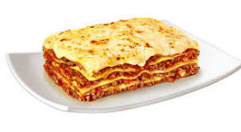
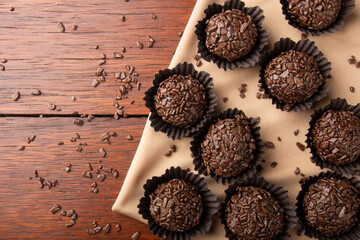

Receitas famosas e praticas
: Lasanha à Bolonhesa
- Ingredientes
- 500 g de carne moída
- 1 pacote de massa para lasanha
- 2 xícaras de molho de tomate
- 1 cebola picada
- 2 dentes de alho
- 300 g de queijo muçarela
- 200 g de presunto
- 1 caixa de creme de leite
- 50 g de queijo parmesão ralado
- Sal e pimenta a gosto
- Azeite de oliva
Lasanha à Bolonhesa — Modo de preparo
Em uma panela, aqueça um fio de azeite e refogue a cebola e o alho.
Adicione a carne moída e cozinhe até dourar.
Acrescente o molho de tomate, tempere com sal e pimenta e cozinhe por cerca de 10 minutos.
Em um refratário, monte camadas na seguinte ordem:
molho
massa de lasanha
presunto
muçarela
Repita as camadas até acabar os ingredientes.
Finalize com creme de leite e queijo parmesão por cima.
Leve ao forno preaquecido a 180 °C por aproximadamente 35 minutos.
Retire, espere alguns minutos e sirva.

Receita famosa 2: Brigadeiro
- Ingredientes
- 1 lata de leite condensado
- 1 colher de sopa de manteiga
- 4 colheres de sopa de chocolate em pó
- Chocolate granulado para decorar
Brigadeiro — Modo de preparo
Em uma panela, coloque o leite condensado, a manteiga e o chocolate em pó.
Misture em fogo baixo até a massa desgrudar do fundo da panela.
Desligue o fogo e deixe esfriar.
Unte as mãos com manteiga e faça pequenas bolinhas.
Passe no chocolate granulado.
Coloque em forminhas e sirva.
